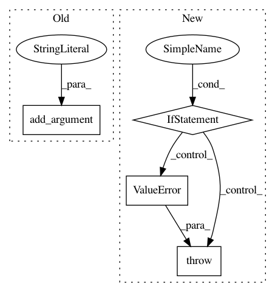

5b82d130747a10559da252ab814aa411ceaca77e,pyroomacoustics/experimental/measure_ir.py,,,#,153
Before Change
parser = argparse.ArgumentParser(prog="measure_ir", description="Measures an impulse response by playing a sweep and recording it using the sounddevice package.")
parser.add_argument("-l", "--length", type=float, default=1.,
help="length of the sweep in seconds")
parser.add_argument("-t", "--type", type=str, default=SweepType.linear.value,
choices=[SweepType.exponential.value, SweepType.linear.value],
help="type of sweep to use linear or exponential (default)")
parser.add_argument("-f", "--file", type=str,
help="name of file where to save the recorded signals (without extension)")
parser.add_argument("-r", "--fs", type=int, default=48000,
help="sampling frequency (default 48 kHz)")
After Change
args = parser.parse_args()
if args.type not in _sweep_types:
raise ValueError("Sweep must be exponential or linear")
kwargs = dict(
sweep_length=args.length,
sweep_type=args.type,
fs=args.fs,
In pattern: SUPERPATTERN
Frequency: 3
Non-data size: 4
Instances
Project Name: LCAV/pyroomacoustics
Commit Name: 5b82d130747a10559da252ab814aa411ceaca77e
Time: 2017-10-08
Author: fakufaku@gmail.com
File Name: pyroomacoustics/experimental/measure_ir.py
Class Name:
Method Name:
Project Name: danforthcenter/plantcv
Commit Name: 6170d2fc49e318f352f284c37e3953d7a8dfcb7c
Time: 2015-08-18
Author: noahfahlgren@gmail.com
File Name: scripts/dev/image_analysis.py
Class Name:
Method Name: options
Project Name: automl/auto-sklearn
Commit Name: 9d0ed839dc9df4c9afc5966c1e3276c478a58d53
Time: 2020-09-16
Author: feurerm@informatik.uni-freiburg.de
File Name: scripts/run_auto-sklearn_for_metadata_generation.py
Class Name:
Method Name: